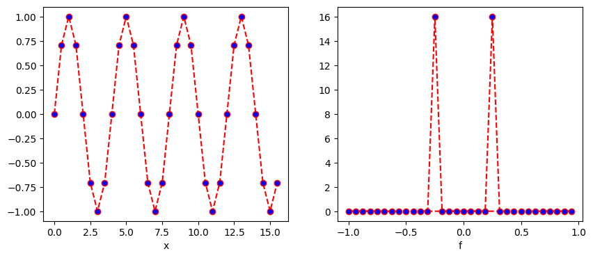
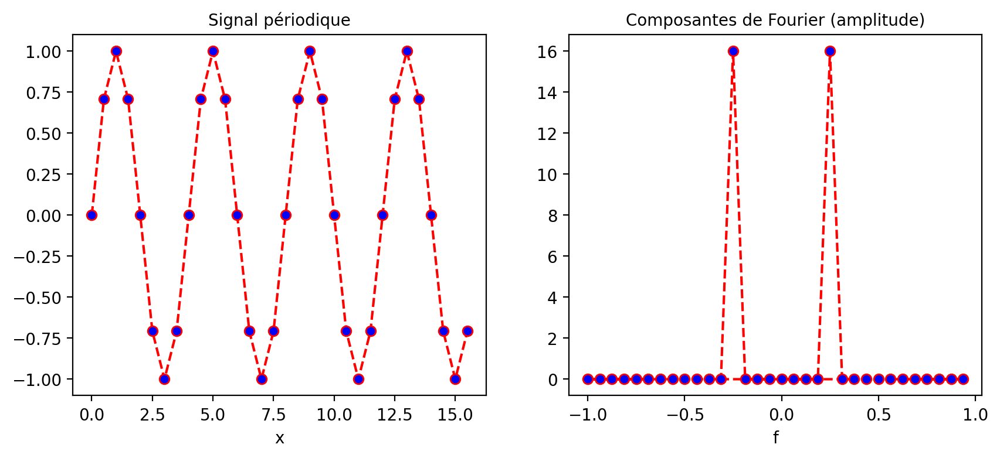
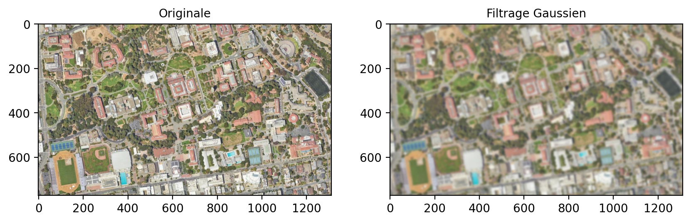
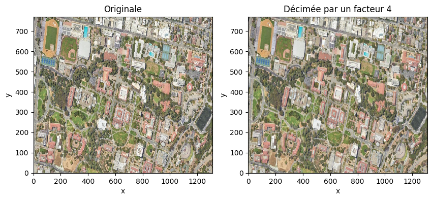
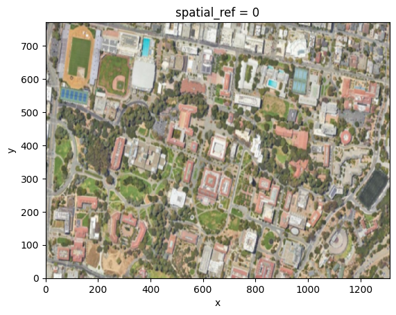
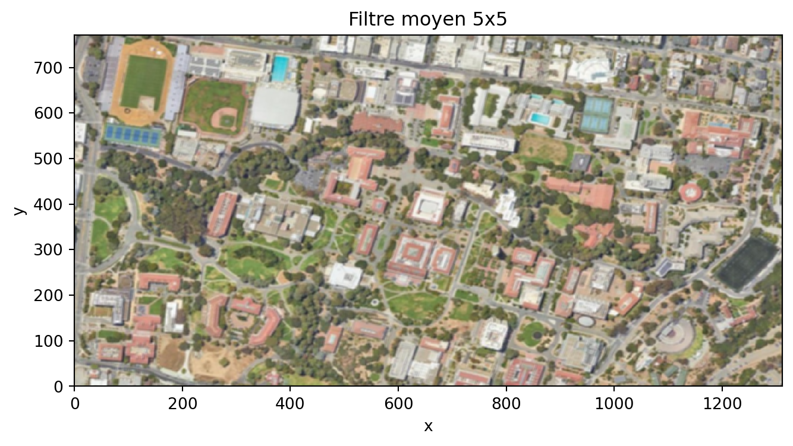
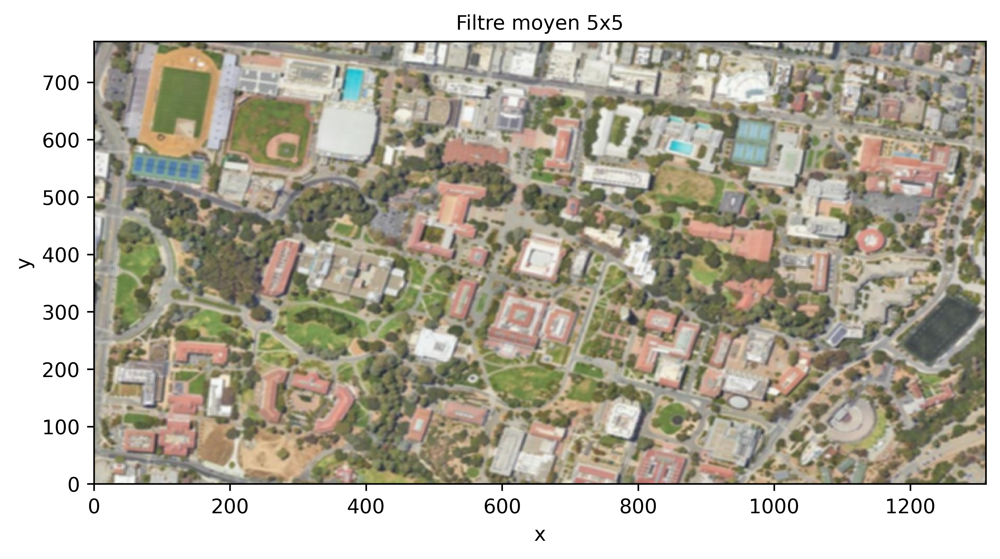
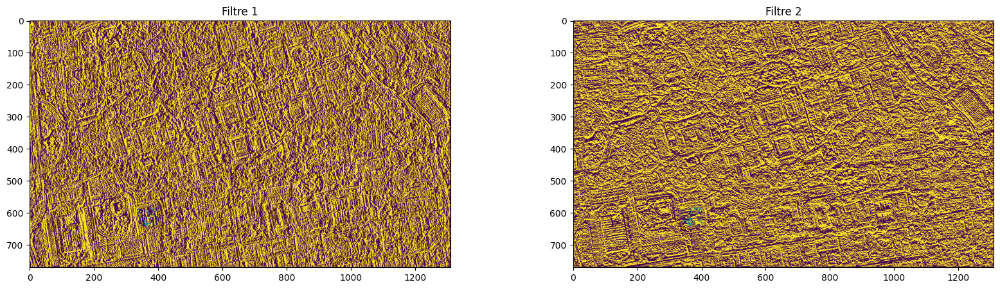
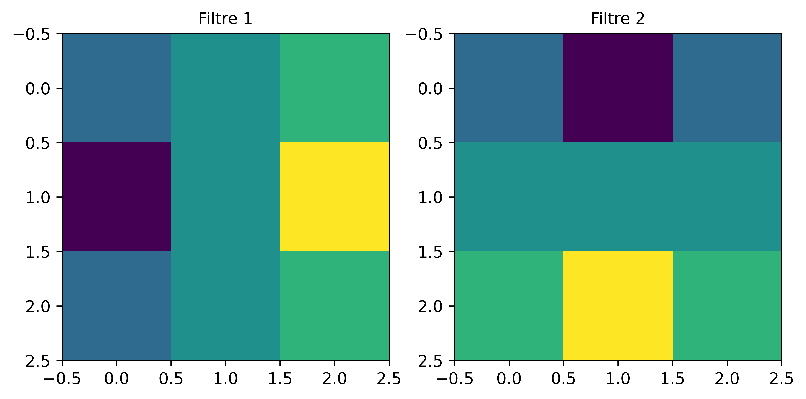

%%capture
!pip install -qU matplotlib rioxarray xrscipy5 Transformations spatiales
5.1 🚀 Préambule
Assurez-vous de lire ce préambule avant d’exécutez le reste du notebook.
5.1.1 🎯 Objectifs
Dans ce chapitre, nous abordons quelques techniques de traitement d’images dans le domaine spatial uniquement. Ce chapitre est aussi disponible sous la forme d’un notebook Python sur Google Colab:

5.1.2 Librairies
Les librairies qui vont être explorées dans ce chapitre sont les suivantes: * SciPy
NumPy
OpenCV
RasterIO
Geemap
xarray
Dans l’environnement Google Colab, seul rioxarray doit être installés:
Vérifier les importations:
import numpy as np
import rioxarray as rxr
from scipy import signal
import xarray as xr
import xrscipy
import matplotlib.pyplot as plt5.1.3 Images utilisées
Nous allons utilisez les images suivantes dans ce chapitre:
%%capture
!wget https://github.com/sfoucher/TraitementImagesPythonVol1/raw/refs/heads/main/data/chapitre01/subset_RGBNIR_of_S2A_MSIL2A_20240625T153941_N0510_R011_T18TYR_20240625T221903.tif -O RGBNIR_of_S2A.tif
!wget https://github.com/sfoucher/opengeos-data/raw/refs/heads/main/raster/landsat7.tif -O landsat7.tif
!wget https://github.com/sfoucher/opengeos-data/raw/refs/heads/main/images/berkeley.jpg -O berkeley.jpg
!wget https://github.com/sfoucher/TraitementImagesPythonVol1/raw/refs/heads/main/data/chapitre01/subset_0_of_S1A_split_NR_Cal_Deb_ML_Spk_SRGR.tif -O SAR.tifVérifiez que vous êtes capable de les lire :
with rxr.open_rasterio('berkeley.jpg', mask_and_scale= True) as img_rgb:
print(img_rgb)
with rxr.open_rasterio('RGBNIR_of_S2A.tif', mask_and_scale= True) as img_rgbnir:
print(img_rgbnir)
with rxr.open_rasterio('subset_0_of_S1A_split_NR_Cal_Deb_ML_Spk_SRGR.tif', mask_and_scale= True) as img_SAR:
print(img_SAR)5.2 Analyse fréquentielle
L’analyse fréquentielle, issue du traitement du signal, permet d’avoir un autre point de vue sur les données à partir de ses composantes harmoniques. La modifications de ces composantes de Fourier modifie l’ensemble de l’image et permet de corriger des problèmes systématiques comme des artefacts ou du bruit de capteur. Bien que ce domaine soit un peu éloigné de la télédétection, les images fourniment par les capteurs sont tous sujets à des étapes de traitement du signal et il faut donc en connaître les grands principes afin de pouvoir comprendre certains enjeux lors des traitements.
5.2.1 La transformée de Fourier
La transformée de Fourier permet de transformer une image dans un espace fréquentielle. Cette transformée est complètement reversible. Dans le cas des images numériques, on parle de 2D-DFT (2D-Discrete Fourier Transform) qui est un algorithme optimisé pour le calcul fréquentiel (Cooley et Tukey 1965). La 1D-DFT peu s’écrire simplement comme une projection sur une série d’exponentielles complexes:
\[X[k] = \sum_{n=0 \ldots N-1} x[n] \times \exp(-j \times 2\pi \times k \times n/N)) \tag{5.1}\]
La transformée inverse prend une forme similaire:
\[x[k] = \frac{1}{N}\sum_{n=0 \ldots N-1} X[n] \times \exp(j \times 2\pi \times k \times n/N)) \tag{5.2}\]
Le signal d’origine est donc reconstruit à partir d’une somme de sinusoïde complexe \(\exp(j2\pi \frac{k}{N}n))\) de fréquence \(k/N\). Noter qu’à partir de \(k=N/2\), les sinusoïdes se répètent à un signe près et forme un miroir des composantes, la convention est lors de mettre ces composantes dans une espace négatif \([-N/2,\ldots,-1]\).
Dans le cas d’un simple signal périodique à une dimension avec une fréquence de 4/16 (donc 4 périodes sur 16) on obtient deux pics de fréquence à la position de 4 cycles observés sur \(N=16\) observations. Les puissances de Fourier sont affichés dans un espace fréquentiel en cycles par unité d’espacement de l’échantillon (avec zéro au début) variant entre -1 et +1. Par exemple, si l’espacement des échantillons est en secondes, l’unité de fréquence est cycles/seconde (ou Hz). Dans le cas de N échantillons, le pic sera observé à la fréquence \(+/- 4/16=0.25\) cycles/secondes. La fréquence d’échantillonnage \(F_s\) du signal a aussi beaucoup d’importance aussi et doit être au moins a deux fois la plus haute fréquence observée (ici \(F_s > 0.5\)) sinon un phénomène de repliement appelé aliasing sera observé.
import math
Fs= 2.0
Ts= 1/Fs
N= 16
arr = xr.DataArray(np.sin(2*math.pi*np.arange(0,N,Ts)*4/16),
dims=('x'), coords={'x': np.arange(0,N,Ts)})
fourier = np.fft.fft(arr)
freq = np.fft.fftfreq(fourier.size, d=Ts)
fourier = xr.DataArray(fourier,
dims=('f'), coords={'f': freq})
fig, axes = plt.subplots(nrows=1, ncols=2, figsize=(10, 4))
plt.subplot(1, 2, 1)
arr.plot.line(color='red', linestyle='dashed', marker='o', markerfacecolor='blue')
axes[0].set_title("Signal périodique")
plt.subplot(1, 2, 2)
np.abs(fourier).plot.line(color='red', linestyle='dashed', marker='o', markerfacecolor='blue')
axes[1].set_title("Composantes de Fourier (amplitude)")
plt.show()
5.2.2 Filtrage fréquentielle
5.2.3 L’aliasing
L’aliasing est un problème fréquent en traitement du signal. Il résulte d’une fréquence d’échantillonnage trop faible par rapport au contenu fréquentielle du signal. Ceci peut se produire lorsque vous sous-échantillonner fortement une image avec un facteur de décimation (par exemple 1 pixel sur 2). En prenant un pixel sur 2, on réduit la fréquence d’échantillonnage d’un facteur 2 ce qui nous impose de réduire le contenu fréquentielle de l’image et donc les fréquences maximales de l’image. L’image présente alors un aspect faussement texturée avec beaucoup de haute fréquences:
fig, axes = plt.subplots(nrows=1, ncols=2, figsize=(10, 4))
plt.subplot(1, 2, 1)
img_rgb.astype('int').plot.imshow(rgb="band")
axes[0].set_title("Originale")
plt.subplot(1, 2, 2)
img_rgb[:,::4,::4].astype('int').plot.imshow(rgb="band")
axes[1].set_title("Décimée par un facteur 4")
plt.show()
Une façon de réduire le contenu fréquentiel est de filtrer par un filtre passe-bas pour réduire les hautes fréquences par exemple avec un filtre Gaussien:
from scipy.ndimage import gaussian_filter
q= 4
sigma= q*1.1774/math.pi
arr = xr.DataArray(gaussian_filter(img_rgb.to_numpy(), sigma= (0,sigma,sigma)), dims=('band',"y", "x"), coords= {'x': img_rgb.coords['x'], 'y': img_rgb.coords['y'], 'spatial_ref': 0})
fig, axes = plt.subplots(nrows=1, ncols=2, figsize=(10, 4))
plt.subplot(1, 2, 1)
img_rgb.astype('int').plot.imshow(rgb="band")
axes[0].set_title("Originale")
plt.subplot(1, 2, 2)
arr[:,::q,::q].astype('int').plot.imshow(rgb="band")
axes[1].set_title("Décimée par un facteur 4")
plt.show()
import xrscipy.signal as dsp
fig, axes = plt.subplots(nrows=1, ncols=2, figsize=(10, 4))
plt.subplot(1, 2, 1)
img_rgb.astype('int').plot.imshow(rgb="band")
axes[0].set_title("Originale")
plt.subplot(1, 2, 2)
dsp.decimate(img_rgb, q=4, dim='x').astype('int').plot.imshow(rgb="band")
axes[1].set_title("Décimée par un facteur 4")Text(0.5, 1.0, 'Décimée par un facteur 4')
5.3 Filtrage d’image
Le filtrage d’image a plusieurs objectifs en télédétection:
La réduction du bruit afin d’améliorer la résolution radiométrique et améliorer la lisibilité de l’image.
Le réhaussement de l’image afin d’améliorer le contraste ou faire ressortir les contours.
La production de nouvelles caractéristiques: c.à.d dériver de nouvelles images mettant en valeur certaines informations dans l’image comme la texture, les contours, etc.
Il existe de nombreuses méthodes de filtrage dans la littérature, on peut rassembler ces filtres en quatre grandes catégories:
Le filtrage peut-être global ou local, c.à.d prendre en compte toute l’image pour filtrer (ex: filtrage par Fourier) ou seulement localement avec une fenêtre ou un voisinage local.
La fonction de filtrage peut-être linéaire ou non linéaire.
La fonction de filtrage peut être stationnaire ou adaptative
Le filtrage peut-être mono-échelle ou multi-échelles
La librairie Scipy (Multidimensional image processing (scipy.ndimage)) contient une panoplie complète de filtres.
5.3.1 Filtrage linéaire stationnaire
Un filtrage linéaire stationnaire consiste à appliquer une même pondération locale des valeurs des pixels dans une fenêtre glissante. La taille de cette fenêtre est généralement impaire (3,5, etc.) afin de définir une position centrale et une fenêtre symétrique.
Note
Mettre une figure ici
Le filtre le plus simple est certainement le filtre moyen qui consiste à appliquer le même poids uniforme dans la fenêtre glissante.
\[ F= \frac{1}{25}\left[ \begin{array}{c|c|c|c|c} 1 & 1 & 1 & 1 & 1 \\ \hline 1 & 1 & 1 & 1 & 1 \\ \hline 1 & 1 & 1 & 1 & 1 \\ \hline 1 & 1 & 1 & 1 & 1 \\ \hline 1 & 1 & 1 & 1 & 1 \end{array} \right] \]
En python, on dispose des fonctions rolling et sliding_window définis dans la librairie numpy. Par exemple pour le cas du filtre moyen on peut construire une nouvelle vue de l’image avec deux nouvelles dimensions x_win et y_win:
import rioxarray as rxr
rolling_win = img_rgb.rolling(x=5, y=5, min_periods= 3, center= True).construct(x="x_win", y="y_win", keep_attrs= True)
print(rolling_win[0,0,1,...])
print(rolling_win.shape)<xarray.DataArray (x_win: 5, y_win: 5)> Size: 100B
array([[ nan, nan, nan, nan, nan],
[ nan, nan, 209., 210., 209.],
[ nan, nan, 213., 214., 212.],
[ nan, nan, 213., 212., 210.],
[ nan, nan, 210., 209., 206.]], dtype=float32)
Coordinates:
band int64 8B 1
x float64 8B 1.5
y float64 8B 0.5
spatial_ref int64 8B 0
Dimensions without coordinates: x_win, y_win
(3, 771, 1311, 5, 5)L’avantage de cette approche est qu’il n’y a pas d’utilisation inutile de la mémoire. Noter les nan sur les bords de l’image car la fenêtre déborde sur les bordures de l’image. Par la suite un opérateur moyenne peut être appliqué.
filtre_moyen= rolling_win.mean(dim= ['x_win', 'y_win'], skipna= True)
#print(median_filter)
filtre_moyen.astype('int').plot.imshow(rgb="band")
Note
Filtre de Sobel, filtre Prewitt
5.3.1.1 Filtrage par convolution
La façon la plus efficace d’appliquer un filtre linéaire est d’appliquer une convolution. La convolution est généralement très efficace car elle est peut être calculée dans le domaine fréquentielle.
scharr = np.array([[ -3-3j, 0-10j, +3 -3j],
[-10+0j, 0+ 0j, +10 +0j],
[ -3+3j, 0+10j, +3 +3j]]) # Gx + j*Gy
print(img_rgb.isel(band=0).shape)
grad = signal.convolve2d(img_rgb.isel(band=0), scharr, boundary='symm', mode='same')
# on reconstruit un xarray à partir du résultat:
arr = xr.DataArray(np.abs(grad), dims=("y", "x"), coords= {'x': img_rgb.coords['x'], 'y': img_rgb.coords['y'], 'spatial_ref': 0})
print(arr)
arr.plot.imshow()(771, 1311)
<xarray.DataArray (y: 771, x: 1311)> Size: 8MB
array([[ 65.96969001, 58.85575588, 54.91812087, ..., 1474. ,
1037.01205393, 389.99487176],
[ 61.07372594, 39.8246155 , 89.18520057, ..., 1763.79647352,
864.92543031, 270.20362692],
[ 98.48857802, 112.44554237, 168.10710871, ..., 2110.61365484,
870.36658943, 204.40156555],
...,
[ 143.17821063, 597.00753764, 2479.42977315, ..., 216.00925906,
248.33847869, 200.89798406],
[ 106.07544485, 393.67245268, 2188.78824924, ..., 124.96399481,
159.90622252, 346.34087255],
[ 41.59326869, 229.05894438, 1845.1216762 , ..., 175.16278143,
33.37663854, 414.3911196 ]], shape=(771, 1311))
Coordinates:
* x (x) float64 10kB 0.5 1.5 2.5 ... 1.308e+03 1.31e+03 1.31e+03
* y (y) float64 6kB 0.5 1.5 2.5 3.5 4.5 ... 767.5 768.5 769.5 770.5
spatial_ref int64 8B 0
5.3.1.1.1 Gestion des bordures
5.3.1.2 Filtrage par une couche convolutionnelle
Important
Cette section nécessite la librairie Pytorch avec un GPU et ne fonctionnera que sur Colab.
Une couche convolutionnelle est simplement un ensemble de filtres appliqués sur la donnée d’entrée. Ce type de filtrage est à la base des réseaux dits convolutionnels qui seront abordés dans le tome 2.
5.3.2 Filtrage adaptatif
Les filtrages adaptatifs consistent à appliquer un traitement en fonction du contenu local d’une image. Le filtre n’est alors plus stationnaire et sa réponse peut varier en fonction du contenu local. Ce type de filtre est très utilisé pour filtrer les images SAR (Synthetic Aperture Radar) qui sont dégradées par un bruit multiplicatif que l’on appelle speckle. On peut voir un exemple d’une image Sentinel-1 (bande HH) sur la région de Montréal, remarquée que l’image est affichée en dB en appliquant la fonction log10.
print(img_SAR.rio.resolution())
print(img_SAR.rio.crs)
#img_SAR.sel(band=2).drop("band").imshow()
xr.ufuncs.log10(img_SAR.sel(band=1).drop("band")).plot()(0.00029254428869762705, -0.000287092818453516)
EPSG:4326
Un des filtres les plus simples pour réduire le bruit est d’appliquer un filtre moyenne, par exemple un \(5x5\) ci dessous:
rolling_win = img_SAR.sel(band=2).rolling(x=5, y=5, min_periods= 3, center= True).construct(x="x_win", y="y_win", keep_attrs= True)
filtre_moyen= rolling_win.mean(dim= ['x_win', 'y_win'], skipna= True)
xr.ufuncs.log10(filtre_moyen).plot.imshow()
Au lieu d’appliquer un filtre moyen de manière indiscriminée, le filtre de Lee (Lee 1986) applique une pondération en fonction du contenu local de l’image \(I\) dans sa forme la plus simple:
\[ \begin{aligned} I_F & = I_M + K \times (I - I_M) \\ K & = \frac{\sigma^2_I}{\sigma^2_I + \sigma^2_{bruit}} \end{aligned} \tag{5.3}\]
Ainsi si la variance locale est élevée \(K\) s’approche de \(1\) préservant ainsi les détails de l’image sinon l’image moyenne \(I_M\) est appliquée.
rolling_win = img_SAR.sel(band=2).rolling(x=5, y=5, min_periods= 3, center= True).construct(x="x_win", y="y_win", keep_attrs= True)
filtre_moyen= rolling_win.mean(dim= ['x_win', 'y_win'], skipna= True)
ecart_type= rolling_win.std(dim= ['x_win', 'y_win'], skipna= True)
cv= ecart_type/filtre_moyen
ponderation = (cv - 0.25) / cv
fig, axes = plt.subplots(nrows=1, ncols=2, figsize=(10, 4))
plt.subplot(1, 2, 1)
cv.plot.imshow( vmin=0, vmax=2)
axes[0].set_title("CV")
plt.subplot(1, 2, 2)
ponderation.plot.imshow( vmin=0, vmax=1)
axes[1].set_title("Pondération")Text(0.5, 1.0, 'Pondération')
On zoomant sur l’image on peut clairement voir que les détails de l’image sont mieux préservés:
Text(0.5, 1.0, 'Filtre de Lee')